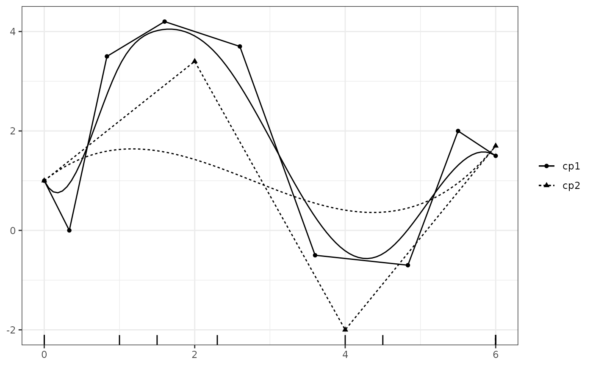
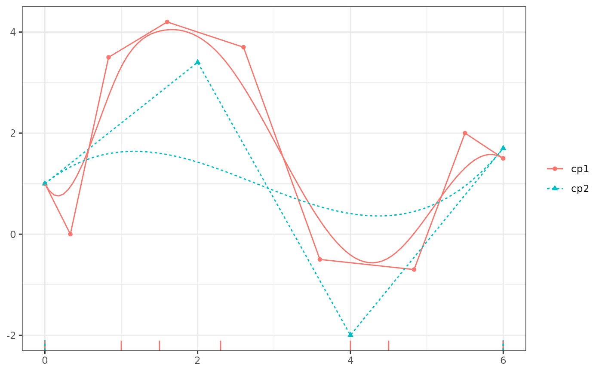
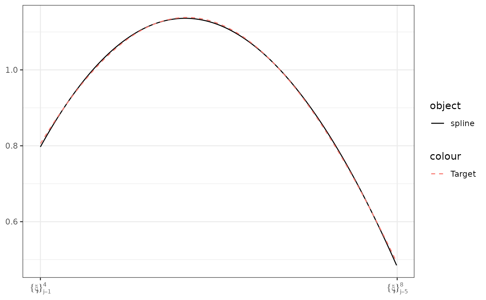

Generate the control polygon for a uni-variable B-spline
Arguments
- x
a
cpr_bsobject- ...
pass through
- theta
a vector of (regression) coefficients, the ordinates of the control polygon.
- formula
a formula that is appropriate for regression method being used.
- data
a required
data.frame- method
- method.args
a list of additional arguments to pass to the regression method.
- keep_fit
(logical, default value is
TRUE). IfTRUEthe regression model fit is retained and returned in as thefitelement. IfFALSEthefitelement with beNA.- check_rank
(logical, defaults to
TRUE) ifTRUEcheck that the design matrix is full rank.
Value
a cpr_cp object, this is a list with the element cp, a
data.frame reporting the x and y coordinates of the control polygon.
Additional elements include the knot sequence, polynomial order, and other
meta data regarding the construction of the control polygon.
Examples
# Support
xvec <- runif(n = 500, min = 0, max = 6)
bknots <- c(0, 6)
# Define the basis matrix
bmat1 <- bsplines(x = xvec, iknots = c(1, 1.5, 2.3, 4, 4.5), bknots = bknots)
bmat2 <- bsplines(x = xvec, bknots = bknots)
# Define the control vertices ordinates
theta1 <- c(1, 0, 3.5, 4.2, 3.7, -0.5, -0.7, 2, 1.5)
theta2 <- c(1, 3.4, -2, 1.7)
# build the two control polygons
cp1 <- cp(bmat1, theta1)
cp2 <- cp(bmat2, theta2)
# black and white plot
plot(cp1)
plot(cp1, show_spline = TRUE)
# multiple control polygons
plot(cp1, cp2, show_spline = TRUE)

plot(cp1, cp2, color = TRUE)
plot(cp1, cp2, show_spline = TRUE, color = TRUE)

# via formula
DF <- data.frame(x = xvec, y = sin((xvec - 2)/pi) + 1.4 * cos(xvec/pi))
cp3 <- cp(y ~ bsplines(x, bknots = bknots), data = DF)
# plot the spline and target data.
plot(cp3, show_cp = FALSE, show_spline = TRUE) +
ggplot2::geom_line(mapping = ggplot2::aes(x = x, y = y, color = "Target"),
data = DF, linetype = 2)
